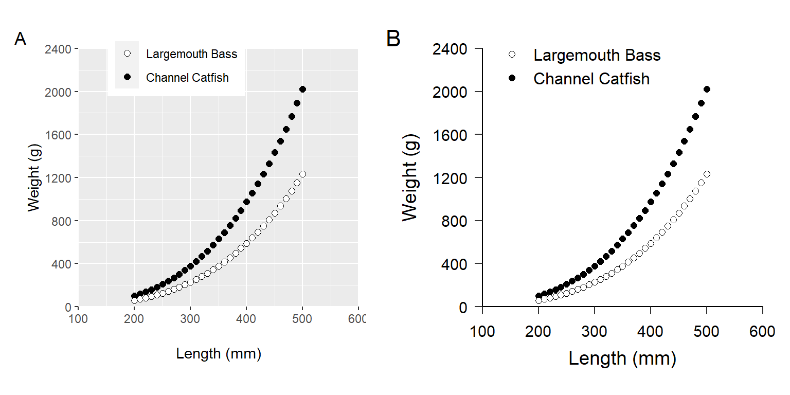

library(ggplot2)
library(patchwork) # for positioning multiple plots
Note
The following packages are loaded for use below.
Introduction
Glassic et al. (2019) showed how to modify default ggplot2 graphics to meet American Fisheries Society (AFS) Style Guide requirements.1 They provided an example with accompanying script to help users implement their suggestions.2 Since their publication ggplot2 has been updated, which did not break their code but leads to some warnings of changed arguments. In this post, I update their script and provide a mechanism that I think will allow their recommendations to be more easily implemented.
1 They also did the same for base R graphics.
2 The ggplot2 script is available here.
The first part of the authors’ script3 creates a simple data frame, called length_weight_data, of simple weight and length data for two species (lmb and cat).
3 Which is not shown here as I want to focus on graphing.
# a quick peek at the data
FSA::peek(length_weight_data,n=6)#R| species length weight
#R| 1 lmb 200 100.7561
#R| 12 lmb 310 422.8894
#R| 25 lmb 440 1330.5176
#R| 37 cat 250 125.5493
#R| 50 cat 380 498.6630
#R| 62 cat 500 1231.4228
Glassic et al. (2019) Figures
Glassic et al. (2019) first demonstrated a default ggplot2 plot (Figure 1 (A)).4
4 This is their code exactly, except that I added indentations for easier reading.
len_wt_default <- ggplot(data = length_weight_data,
aes(x = length, y = weight, fill = species)) +
geom_point() +
labs(title = "A")They then modified this plot to fit the AFS Style Guide requirements (Figure 1 (B)).5
5 I modified their legend.position slightly due to website size constraints.
len_wt_afs <- ggplot(data = length_weight_data,
aes(x = length, y = weight, fill = species)) +
#set symbol shape and size
geom_point(shape = 21, size = 2) +
#set the limits and tick breaks for the y-axis
scale_y_continuous (limits = c(0,2400), expand = c(0,0),
breaks = seq(0,2400,400)) +
#set the limits and tick spacing for the x-axis
scale_x_continuous(limits = c(100,600), expand = c(0,0),
breaks = seq(100,600,100)) +
#adjust the order of the legend, make new labels, and select the symbol colors
scale_fill_manual(limits = c("lmb", "cat"),
labels = c("Largemouth Bass", "Channel Catfish"),
values = c("black", "white")) +
#add B to figure
ggtitle ("B") +
#label the y-axis
ylab("Weight (g)") +
#label the x-axis
xlab("Length (mm)") +
#add legend title, but left blank here because we want a legend but no title
labs(fill = "") +
#makes the figure background white without grid lines
theme_classic() +
#below are theme settings that provide unlimited control of your figure
#and can be a template for other figures set the size, spacing, and color
#for the y-axis and x-axis titles
theme(axis.title.y = element_text(size = 14,
margin = margin(t = 0, r = 10, b = 0, l = 0),
colour = "black"),
axis.title.x = element_text(size = 14,
margin = margin(t = 10, r = 0, b = 0, l = 0),
colour = "black"),
#set the font type
text = element_text(family = "Times New Roman"),
#modify plot title, the B in this case
plot.title = element_text(face = "bold", family = "Arial"),
#position the legend on the figure
legend.position = c(0.35,0.95),
#adjust size of text for legend
legend.text = element_text(size = 12),
#margin for the plot
plot.margin = unit(c(0.5, 0.5, 0.5, 0.5), "cm"),
#set size of the tick marks for y-axis
axis.ticks.y = element_line(size = 0.5),
#set size of the tick marks for x-axis
axis.ticks.x = element_line(size = 0.5),
#adjust length of the tick marks
axis.ticks.length = unit(0.2,"cm"),
#set size and location of the tick labels for the y axis
axis.text.y = element_text(colour = "black", size = 14, angle = 0,
vjust = 0.5, hjust = 1,
margin = margin(t = 0, r = 5, b = 0, l = 0)),
#set size and location of the tick labels for the x axis
axis.text.x = element_text(colour = "black", size = 14, angle = 0,
vjust = 0, hjust = 0.5,
margin = margin(t = 5, r = 0, b = 0, l = 0)),
#set the axis size, color, and end shape
axis.line = element_line(colour = "black", size = 0.5, lineend = "square"))They then arranged the two plots side-by-side.6
6 I used gridExtra:: here so as not to have to load the entire package.
ggplot_figure <- gridExtra::grid.arrange(len_wt_default, len_wt_afs, ncol = 2)
ggplot_figureggplot2 including one with (A) default values and (B) a custom figure that adheres to American Fisheries Society guidelines for authors. This reproduces Figure 2 in Glassic et al. (2019).
Finally, Glassic et al. (2019) demonstrated how to save the plot with a custom width and height (holding a specific aspect ratio) and resolution.
ggsave(ggplot_figure, file = "ggplot_figure.tiff",
width = 20.32, height = 7.62, units = "cm", dpi = 300)
Issues that Must be Addressed
When I first ran the author’s code I received an error about a missing font. I followed the advice in this guide from the extrafont package and that seemed to have cleared up the issue.
More recent versions of ggplot2 use linewidth= rather than size= in all line-related elements. This needs to be changed in the authors’ use of axis.tick.x=, axis.tick.y=, and axis.line.
Suggested Adjustments
I separate the construction of the plot by Glassic et al. (2019) into two parts. The first part consists of items that are specific to the plot and that cannot be set globally for use in other plots. These are items likes data=, aes(), geom()s, scale()s, and labels. The second part consists of items that will likely need to be held constant across different plots. These are items like font size, tick lengths, margins, etc. These are largely the items that Glassic et al. (2019) adjust with theme(). Below I explain some suggested modifications to the plot specific items. I then show how to move most of the elements that will be common across plots into a custom theme that can be easily applied to any plot. Finally, I demonstrate using patchwork rather than gridExtra to place plots next to each other.
Plot-Specific Elements
I suggest the following changes to the plot-specific elements which result in Figure 2 (A).
- I named the second argument to
ggplot()withmapping=.ggplot()is smart enough to figure this argument out but I think it is awkward to name the first argument (i.e.,data=) but not the second. - I moved the text for the axis labels (i.e., titles) into
scale_y_continuous()andscale_x_continuous()for simplicity (and thus removedylab()andxlab()). - I changed
expand=c(0,0)inscale_y_continuous()andscale_x_continuous()toexpand=expansion(mult=c(0,0))to follow more recentggplot2conventions. This still results in not scale expansion at the top or bottom of axis. - I removed
limits=inscale_fill_manual()and used a named vector invalues=to accomplish the same task. I think this makes it easier to see which category is going to get which color. - I removed
ggtitle()as I am going to accomplish that same task withpatchworkas shown where I put the two plots together. - I used
legend.title=element_blank()intheme()rather thanlabs(fill="")to remove to legend title. I think(?) this handles the freed up space better. - I included
legend.position=here because Glassic et al. (2019) positioned the legend within the plot area and, thus, will need to be set specific to each plot (i.e., in a “white area”).
len_wt_afs1 <- ggplot(data=length_weight_data,
mapping=aes(x=length,y=weight,fill=species)) +
# set symbol shape and size
geom_point(shape=21,size=2) +
# set the limits, tick breaks, and scale expansion for the y- and x-axis
scale_y_continuous(name="Weight (g)",
limits=c(0,2400),breaks=seq(0,2400,400),
expand=expansion(mult=c(0,0))) +
scale_x_continuous(name="Length (mm)",limits=c(100,600),breaks=seq(100,600,100),
expand=expansion(mult=c(0,0))) +
# set the symbol colors and make new labels for each level
scale_fill_manual(values=c("lmb"="black","cat"="white"),
labels=c("Largemouth Bass","Channel Catfish")) +
theme(
# remove legend title
legend.title=element_blank(),
# set legend position within the plot
legend.position = c(0.35,0.95)
)Custom Theme for All Plots
Theme elements that will be consistent across plots can be put into a custom theme that can then be easily applied to any plot. The code below, for example, shows the start of a new theme called theme_AFS() that has theme_classic() as its base but will have several elements replaced. theme_AFS() will use a base font size of 14 and Times New Roman as defaults, which will minimize some of the authors code.
theme_AFS <- function(base_size=14,base_family="Times New Roman") {
theme_classic(base_size=base_size,base_family=base_family) +
theme(
### Change theme elements here ###
)
}Within theme() of the code above I am going to add nearly all of the elements that Glassic et al. (2019) included, though I reordered the items in a way that makes sense to me (e.g., axis title then axis tick labels then axis ticks then axis line). Other adjustments to note are:
- I removed the
text=because the font family was already set withbase_family=. - I removed
legend.position=because Glassic et al. (2019) positioned the legend within the plot area and, thus, will need to be set specific to each plot (i.e., in a “white area”). - I removed
size=14fromaxis.title.y=,axis.title.x=,axis.text.y=, andaxis.text.x=because that was set withbase_size=. - I replaced
axis.ticks.y=andaxis.ticks.x=withaxis.ticks=because their elements were the same and this will set both at the same time.
theme_AFS <- function(base_size=14,base_family="Times New Roman") {
theme_classic(base_size=base_size,base_family=base_family) +
theme(
# modify plot title,the B in this case
plot.title=element_text(family="Arial",face="bold"),
# margin for the plot
plot.margin=unit(c(0.5,0.5,0.5,0.5),"cm"),
# set axis label (i.e., title) colors and margins
axis.title.y=element_text(colour="black",margin=margin(t=0,r=10,b=0,l=0)),
axis.title.x=element_text(colour="black",margin=margin(t=10,r=0,b=0,l=0)),
# set tick label color, margin, and position and orientation
axis.text.y=element_text(colour="black",margin=margin(t=0,r=5,b=0,l=0),
vjust=0.5,hjust=1),
axis.text.x=element_text(colour="black",margin=margin(t=5,r=0,b=0,l=0),
vjust=0,hjust=0.5,),
# set size of the tick marks for y- and x-axis
axis.ticks=element_line(linewidth=0.5),
# adjust length of the tick marks
axis.ticks.length=unit(0.2,"cm"),
# set the axis size,color,and end shape
axis.line=element_line(colour="black",linewidth=0.5,lineend="square"),
# adjust size of text for legend
legend.text=element_text(size=12)
)
}This can then be “added” to any plot to apply the theme. For example, it is applied to the code from above that produced Figure 2 (A) to make Figure 2 (B). It is important, however, to make sure that the plot-specific theme() elements are applied after the custom theme.
len_wt_afs2 <- ggplot(data=length_weight_data,
mapping=aes(x=length,y=weight,fill=species)) +
# set symbol shape and size
geom_point(shape=21,size=2) +
# set the limits, tick breaks, and scale expansion for the y- and x-axis
scale_y_continuous(name="Weight (g)",
limits=c(0,2400),breaks=seq(0,2400,400),
expand=expansion(mult=c(0,0))) +
scale_x_continuous(name="Length (mm)",
limits=c(100,600),breaks=seq(100,600,100),
expand=expansion(mult=c(0,0))) +
# set the symbol colors and make new labels for each level
scale_fill_manual(values=c("lmb"="black","cat"="white"),
labels=c("Largemouth Bass","Channel Catfish")) +
theme_AFS() +
theme(
# remove legend title
legend.title=element_blank(),
# set legend position within the plot
legend.position = c(0.35,0.95)
)
Hint
See the “Themes” chapter of Wickham et al. (2022) for an excellent description of using themes in ggplot2 graphics.
Using patchwork to Position Plots
The patchwork package provides a simple but extensive environment for combining multiple plots. In the simple case here where we want two plots side-by-side we simply need to “add” them together as shown below. plot_annotation() can be used to add letters to the two panels. The documentation for patchwork is excellent for better understanding what this package can do.
len_wt_afs1 + len_wt_afs2 +
plot_annotation(tag_levels="A")
ggplot2 including one with (A) only plot-specific modifications to default values and (B) with plot specific modifications and a custom theme that adheres to American Fisheries Society guidelines for authors. Panel B reproduces panel B in Figure 1 above and Figure 2 in Glassic et al. (2019).
Hint
Annotating the plots with patchwork will place the annotations on the very edge of the figure panel. Use ggtitle() to move them more to the right as Glassic et al. (2019) had them.
Conclusion
Glassic et al. (2019) provided an excellent example and script for how to use ggplot2 in R to make figures that adhere to the AFS Style Guidelines. Since their paper was published a few items in ggplot2 have changed and, thus, their script needed to be updated to reflect those changes as described above. More importantly their suggestions could be put into a custom theme so that they could be easily applied to other figures to ensure consistency (and adherence to the AFS Style Guide). As an example, theme_AFS() is applied to a ggplot2 length frequency histogram below (Figure 3).
data(BluegillLM,package="FSAdata")
head(BluegillLM)#R| sernum sl fl tl wght
#R| 1 100 126 152 157 92
#R| 2 110 124 150 153 88
#R| 3 120 118 140 149 77
#R| 4 130 136 163 172 130
#R| 5 140 191 144 150 86
#R| 6 150 121 149 155 90ggplot(data=BluegillLM,mapping=aes(x=tl)) +
geom_histogram(binwidth=10,boundary=0,color="black",fill="gray25") +
scale_y_continuous(name="Number of Bluegill",
limits=c(0,25),breaks=seq(0,25,5),
expand=expansion(mult=c(0,0))) +
scale_x_continuous(name="Total Length (mm)",
limits=c(0,250),breaks=seq(0,250,25),
expand=expansion(mult=c(0,0))) +
theme_AFS()
Moreover, if you are working on a project where you will use theme_AFS() for all figures then you can set it as the default theme at the beginning of our script with theme_set().
theme_set(theme_AFS())With this Figure 4 automatically has theme_AFS() applied.
ggplot(data=BluegillLM,mapping=aes(x=tl,y=wght)) +
geom_point(alpha=0.5) +
scale_y_continuous(name="Weight (g)",
limits=c(NA,300),breaks=c(2,5,10,50,100,200,300),
expand=expansion(mult=c(0.01,0)),
trans="log10") +
scale_x_continuous(name="Total Length (mm)",
limits=c(NA,250),breaks=c(60,75,100,125,150,200,250),
expand=expansion(mult=c(0.01,0)),
trans="log10")
References
Glassic, H. C., K. C. Heim, and C. S. Guy. 2019. Creating figures in r that meet the afs style guide: Standardization and supporting script. Fisheries 44(11):539–544.
Wickham, H., D. Navarro, and T. L. Pedersen. 2022. ggplot2: Elegant Graphics for Data AnalysisThird. Springer.
Reuse
Citation
BibTeX citation:
@misc{h.ogle2022,
author = {Derek H. Ogle},
title = {AFS {Style} in Ggplot2 {Figures}},
date = {2022-12-22},
url = {https://fishr-core-team.github.io/fishR//blog/posts/2022-12-22_AFS_Style_Figures},
langid = {en}
}
For attribution, please cite this work as:
Derek H. Ogle. 2022, December 22. AFS
Style in ggplot2 Figures.